|
|
Main Window Toolbars |
The main window has a number of toolbars, which can be displayed or hidden, and placed on any edge of the Workspace. The toolbars provide access to many of the commands that are on the menus.
To show or hide a toolbar, click the appropriate button on the Manager toolbar, or choose Edit → Toolbars → toolbar from the main menu bar.
To hide a toolbar, you can right-click in the toolbar and choose Hide from the shortcut menu.
To move a toolbar, drag the handle at the top (or left) to the desired location. It can be dragged to either side or the top or bottom of the Workspace.
The appearance of the toolbar buttons can be customized. You can display the icon only, text only, text under the icon or text beside the icon. For an individual toolbar, right-click and choose an option from the Style submenu of the shortcut menu. You can change the style for all toolbars in the General - Appearance tab of the Preferences panel. You can also change the font for the toolbar buttons in the General - Application fonts tab.
The buttons that are displayed on each toolbar can be selected in the Customize Toolbars panel, which you open by choosing Customize from the toolbar shortcut menu, or by choosing Edit → Advanced → Customize Toolbars.
There are several kinds of buttons on the toolbar. Some buttons perform simple tasks like the Fit to Workspace or Clear Workspace button. Other buttons open panels such as the Import panel. Buttons with a small triangle in the lower right corner contain menus that you can open by holding down the (left) mouse button. Some of these buttons "remember" the last menu choice, and you only need to click the button to use that choice again. Some buttons have different actions depending on whether you click them or double-click them. Buttons that you can use for picking apply the action to the selected atoms if you double-click them, for example.
The buttons available for each toolbar are described below, except for the the Find toolbar. Where there is a topic describing a button's action, the link is given. Equivalent menu choices are given where appropriate.
This toolbar contains buttons that show or hide all the other toolbars.
| Open (Project → Open;
Ctrl+O (⌘O))
Open a project. Opens the Open Project project selector so you can select a project to open. |
|
| Save As (Project → Save
As) Save a project by a different name. |
|
 |
Import (Project →
Import Structures; Ctrl+I (⌘I)) Import structures into the project as new entries. Opens the Import panel. |
| Export (Project →
Export Structures) Export structures from the project to file. Opens the Export panel. |
|
 |
Table (Project →
Show Table; Ctrl+T (⌘T)) Open or close the Project Table panel. |
 |
2D Viewer Display 2D structures of the selected entries in a grid. Opens the 2D Viewer panel. |
| 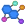 | Lig. Int. (Tools → Ligand
Interaction Diagram) Display a simplified representation of ligand-receptor interactions. Opens the Ligand Interaction Diagram panel. |
| Get PDB (Project → Get
PDB) Retrieve a structure from the PDB and import it into the project. Opens the Get PDB File dialog box. |
|
 |
Prep Wiz (Workflows →
Protein Preparation Wizard) Prepare a protein for use in calculations. Opens the Protein Preparation Wizard panel. |
 |
Select (Edit →
Select Atoms → Pick to Select) Select atoms in the Workspace. Double-click to select all atoms. This button has a menu from which you can choose the type of structural unit you want to select. If you select a structural unit from the menu, the button's icon changes to reflect that structural unit (A for atoms, R for residues, etc.). Once you have chosen a structural unit, you can click on an atom in the Workspace and all the atoms in that structural unit are selected. For example, choose Residues and click on an atom. All the atoms in that residue are selected. You can expand the selection to include atoms or entire residues within a specified distance by choosing one of the distance options, and you can include or exclude the picked object in the final selection. You can choose Select to open the Atom Selection dialog box and specify atoms to select. |
 |
Undo/Redo (Edit →
Undo/Redo; Ctrl+Z (⌘Z)) Undo or redo the last action. This button changes appearance, depending on the action. |
| Cut (Edit → Cut;
Ctrl+X (⌘X)) Delete the selected atoms from the Workspace and place them on the clipboard. The atoms are added to the clipboard in Maestro format and in SMILES format. You can paste them into the Workspace at a later time, or paste them into another application. |
|
| Copy (Edit → Copy;
Ctrl+C (⌘C)) Copy the Workspace selection onto the clipboard, and copy an image of the Workspace. The clipboard stores the atoms in the selection in Maestro format and SMILES format, and an an image of the Workspace. The SMILES string and the image can be pasted into another application; the atoms can be pasted back into the Workspace. The resolution of the image is the current screen resolution, so if you want a higher resolution, you should use the Save Image panel. |
|
| Paste (Edit → Paste ;
Ctrl+V (⌘V)) Paste a structure from the clipboard into the Workspace. The structure can be a SMILES string, a structure from ChemDraw or Isis Draw (Windows) or a set of atoms previously cut or copied from the Workspace. If the structure is a SMILES string, it is converted into a 2D structure. The 2D structure is added to the project as a new entry, with the SMILES string for the structure as the title. No attempt is made at 3D conversion. You should consider running LigPrep to convert the structure to 3D, or choose Edit → Paste Special → As 3D If you paste a set of atoms that were cut or copied from Maestro, they are placed at the coordinates at which they were cut or copied onto the clipboard. You can paste atoms from one Maestro session into another session. |
|
| Delete (Edit → Delete) This button has a menu from which you can choose the object that you want to delete. The menu has three sections. The first section lists structural units. If you select one of these items, the delete button is indented to indicate that you are selecting to delete atoms or bonds from the structure. The second section lists other kinds of objects that can be deleted: hydrogens, waters, and zero-order bonds, and also opens the Atom Selection dialog box for defining which atoms to delete. The third section allows you to delete various kinds of markers associated with the structures in the Workspace: labels, measurements, H-bonds, contacts, ribbons, adjustments, and captions. For the second and third groups, the deletion takes place when you select the menu item. |
|
| 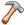 | Build (Edit →
Build) Show or hide the Build toolbar and Fragments toolbar. To open the Build panel, click and hold, and choose Fragments, Atom Properties, or Residue Properties. |
| 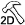 | Sketcher (Edit → 2D
Sketcher) Sketch to edit or create structures in 2D. Opens the 2D Sketcher panel. |
| 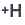 | Add H Add hydrogen atoms to a structure that lacks them, to complete the valence. This button has a menu from which you can choose the type of structure to which you want to add hydrogens. The menu has two sections. The first section is a list of structural units which allow you to add hydrogens to objects by selecting them in the Workspace. If you select one of these structural units, the button is indented to indicate that you are selecting to add hydrogens. The second section opens the Atom Selection dialog box for defining structures to which to add hydrogens. |
| 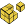 | Transform (Edit →
Transform) Transform (rotate or translate) selected atoms in the Workspace. This button has a menu from which you can choose to display hydrogen bonds, contacts, and bond lengths while transforming, choose a structural unit to pick the atoms to transform, or open the Advanced Transformations panel for more control over the transformation. |
 |
Adjust (Edit →
Adjust) This button has a menu from which you can choose geometric parameters to adjust: distances, angles, dihedrals or chirality. In addition to the general choices, there are specific choices for torsions, peptides, and side chains (rotamers). Once you have made your choice, click on the atoms (or bonds) to be adjusted. To make the adjustment, use the mouse wheel or drag horizontally with the left mouse button. This toolbar button provides facilities available in the Adjust panel |
| Fit (View → Fit to Workspace
→ Selected Atoms; Z) Fit the selected atoms (or all atoms, if there is no selection) to the Workspace. See Fit to Workspace for more information. |
|
 |
Fog (View → Fog → option) This button has a menu from which you can choose Automatic, On, or Off. Automatic fogging turns fogging on when the molecule has more than 40 atoms. |
 |
Enhance (View → Fog →
Enhance Depth Cues) Enhance depth cues. See Enhance Depth Cues for more information. |
| Rotate X (View → Rotate X
90) Rotate the Workspace around the X axis by 90 degrees. |
|
 |
Rotate Y (View → Rotate Y
90) Rotate the Workspace around the Y axis by 90 degrees. |
| 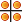 | Tile (View → Tile →
Tile Workspace; Ctrl+L (⌘L)) Arrange the Workspace entries in a rectangular grid of "tiles". See Tiling Entries for more information. |
 |
Reset (View →
Reset) Resets the rotation, translation, and zoom of the Workspace to the default state. |
| Create Entry (Workspace →
Create Project Entry; Ctrl+Shift+N (⇧⌘N)) Create an entry in the current project using the contents of the Workspace. Opens a dialog box in which you can supply a title for the entry, and choose whether to create the entry from all atoms, the selected atoms, or the displayed atoms. |
|
| Clear (Workspace →
Clear) Excludes all entries in the Project Table, and deletes the contents of the scratch entry, if there is one. |
|
| Save Image (Workspace → Save
Image) Save an image of the Workspace to a file in TIFF, JPEG, or PNG format, in the Save Image panel. |
|
| New Scene (Workspace →
Scenes → New) Create a new "scene", which is a snapshot of part or all of the project, including the Workspace content and display settings. Opens the New Scene dialog box, in which you can provide a description and choose which parts of the project to include in the scene. |
|
| View Scenes (Workspace →
Scenes → View) Enter a mode in which you view scenes. The Scenes toolbar is displayed in a bar at the bottom of the Workspace, and the selected scene is opened. While you are viewing scenes, no changes are made to the project. |
The Style toolbar allows you to create and apply visual styles for the Workspace contents. These styles consist of combinations of molecular representation, color scheme, display or undisplay of classes of atoms, display of H-bonds and contacts, and generation and display of surfaces. The style settings made with this toolbar are designed to add only those components specified, and leave any other style choices as they are. All style settings are stored as preferences, so that they persist across Maestro sessions.

|
Apply Set and apply a defined style. Clicking this button applies the defined style. This button has a menu with the following options:
|

|
Reapply When the Workspace content changes, reapply the Workspace style, according to the options set in the Workspace Style Settings dialog box. This button is turned off when a project is closed, subject to a preference. |

|
Contacts Select options for display of contacts and H-bonds. Opens the Contacts and H-Bonds panel, in which you can make settings. See the H-Bonds and Contatcs Panel topic for more information on contacts and H-bonds. |

|
Surfaces Create molecular surfaces for the binding site by clicking this button, or from the option menu, show or hide all surfaces (Show All and Hide All), or open the Manage Surfaces panel so that you have more control over which surfaces are displayed and how they are displayed. |
| Fix (Workspace → Style
→ Fix Receptor) Fix the receptor entry in the Workspace. |
|
| 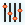 | Rendering (Workspace → Style
→ Rendering) Select an option for the rendering, for highest quality (Quality), best performance when transforming (Performance), or a balance between the two (Balance). The performance option includes using a simplified representation for atoms, bonds, and ribbons where necessary. |
| Material (Workspace → Style
→ Material) Select an option for the surface appearance of the objects in the Workspace: the "material" from which the objects appear to be made. See the Appearance panel topic for more information. |
The Saved Views toolbar provides tools for saving, managing, and displaying views of the Workspace. Views are saved as part of the project, but can be imported and exported to make them available in other projects.
| Save (View → Save) Save the current view of the Workspace (orientation, location, and zoom) as a saved view. |
|
| Previous (View → Restore
View → Previous) Apply the previous view in the list of saved views to the Workspace. |
|
| Next (View → Restore
View → Next) Apply the next view in the list of saved views to the Workspace. |
|
| View1 (View → Restore
View → View1) Apply the first saved view to the Workspace. The other four numbered buttons apply the view number. Buttons for up to five views can be shown in this toolbar. These buttons are always assigned to the first five views, and the assignment changes if you reorder the list in the Manage Views panel. If there are fewer than five views, the buttons that do not have a corresponding view are not available. |
|
| Manage (View → Manage
Views) Manage the saved views. Opens the Manage Views panel, in which you can select views to show, play through views and record movies of the views, import and export views, save and delete views, and animate view changes. |
This toolbar contains tools for displaying atoms, undisplaying atoms, and adding atoms to the display. It does not have menu equivalents. Some of the features are available in the Display/Undisplay Atoms panel, but others are only available from this toolbar.
| Display Sel Display only the selected atoms. This button has a menu from which you can choose a structural unit to use when picking atoms for display. Choose a structural unit, then click on an atom to display the atoms in that unit only. Double-click to display all atoms. |
|
| Display Only This button has a menu from which you can select a category of atoms to display, or open the Atom Selection dialog box to select atoms to display. The categories are: All, Protein, Protein Backbone, Protein Side Chains, Ligands, Waters, Ions, All Hydrogens, Nonpolar Ligand Hydrogens, Nonpolar Hydrogens, Polar Hydrogens, Membrane. |
|
| Also Display This button has a menu from which you can select a category of atoms to add to the display, or open the Atom Selection dialog box to select atoms to add to the display. The categories are the same as for Display Only. | |
| Undisplay This button has a menu from which you can select a category of atoms to undisplay, or open the Atom Selection dialog box to select atoms to undisplay. The categories are the same as for Display Only. | |
| Within Display residues within a specified distance of the currently displayed atoms. Entire residues that have any atoms within this distance of the displayed atoms are added to the display. This button has a menu from which you can select a specific distance, or open a dialog box to enter a distance. Clicking the button performs the action. By default nonpolar hydrogens are not added, but you can display them by setting a preference under Workspace → Display/undisplay atoms in the Preferences panel. |
This toolbar provides tools for changing the representation of atoms, bonds, and ribbons, including both shape and color. The shape or style features on the toolbar are available in the Molecular Representation panel and the Ribbons panel; the color features are available in the Atom and Bond Coloring panel. There are no main menu items corresponding exactly to these buttons.
| 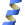 | Ribbon Show, hide, or color ribbons. This button has a menu from which you can choose to display ribbons for all, selected, or displayed residues; delete ribbons; and display various combinations of atoms that are associated with the ribbons. You can also choose various coloring schemes for the ribbons. |
| Wire Draw bonds in wire frame representation. This button has a menu from which you can select a structural unit to use when picking atoms to display in wire representation. Choose a structural unit, then click on an atom to display the bonds of that unit in wire representation. Double-click to apply to all bonds. |
|
| CPK Draw atoms in CPK representation. This button has a menu from which you can select a structural unit to use when picking atoms to display in CPK representation. Choose a structural unit, then click on an atom to display the atoms of that unit in CPK representation. Double-click to apply to all atoms. |
|
| Ball & Stick Draw atoms and bonds in ball-and-stick representation. This button has a menu from which you can select a structural unit to use when picking atoms to display in Ball & Stick representation. Choose a structural unit, then click on an atom to display the atoms of that unit in Ball & Stick representation. Double-click to apply to all atoms. |
|
| Tube Draw bonds in tube representation. This button has a menu from which you can select a structural unit to use when picking atoms to display in tube representation. Choose a structural unit, then click on an atom to display the bonds of that unit in tube representation. Double-click to apply to all bonds. |
|
| Thin Tube Draw bonds in thin tube representation. This button has a menu from which you can select a structural unit to use when picking atoms to display in thin in tube representation. Choose a structural unit, then click on an atom to display the bonds of that unit in tube representation. Double-click to apply to all bonds. |
|
 |
Color Scheme Color all atoms with a chosen color scheme. This button has a menu from which you can choose the scheme, as defined in the Color Schemes tab of the Atom and Bond Coloring panel. The custom color schemes for carbon atoms and ligands are on a submenu. |
| Color Color residues with a constant color. This button has a menu from which you can choose the color. The color choice is persistent. You can then pick residues to apply the color, or double-click the button to apply the color to all atoms. |
This toolbar provides tools for labeling Workspace features in various ways: atom labels, measurements, target entry properties, highlights, and captions.
 |
Label All Label all atoms with a single type of label. This button has a menu from which you can choose the type of label; delete labels; and select an option to reapply the labels when the Workspace changes. |
| Pick to Label Pick atoms in the Workspace to apply a label. Double-click to apply the label to all atoms. This button has a menu from which you can: –choose a structural unit to use when picking atoms for labeling –open the Atom Selection dialog box to select atoms to label (Select) –open the Atom Labels panel to set the label composition (Composition) –reposition labels by picking a label and dragging it (Reposition) –reset the label positions to the defaults (Reset Positions) –open the Preferences panel at the Atom labels tab to set label preferences –delete labels (Delete Labels) |
|
| HBonds Display hydrogen bonds as yellow dotted lines. This button has a menu from which you can choose to display H-bonds between entries (Inter) or within entries (Intra), or both (All); delete H-bonds, and open the Preferences panel to make settings for H-bonds. For more information on H-bonds, see the H-Bonds and Contacts Panel topic. |
|
| Measure Measure distances, angles, dihedrals or NMR coupling constants. This button has a menu from which you can choose between distance, angle, dihedral, or 1H NMR coupling for measurement. This choice is persistent. You can then click on atoms in the Workspace to define the measurement. You can move the measurement labels by selecting Reposition and then dragging labels in the Workspace, one at a time. You can delete measurements from the Workspace using this menu, and you can open the Preferences panel to make settings for measurements. For more information on making measurements, see the Measurements Panel topic. |
|
 |
User Text Add or modify the user-defined text in the atom label on the picked atom. If the atom does not have a label, a label is added. When you pick an atom, a dialog box opens so that you can type in the text and choose whether to replace the label or add to the label. The user text can also be modified in the Atom Labels panel. |
| Feedback (Workspace →
Single-Entry Feedback) Display information about a single entry, termed the "target" entry, in the top left corner of the Workspace. See the Preferences panel for more information. |
|
| Highlights (Workspace →
Highlights) Create, modify, delete, or apply highlights to atoms in the Workspace. Opens the Manage Highlights panel. |
|
| Quick Highlight Add a highlight to picked atoms with the current highlight settings.This button has a menu from which you can choose a structural unit to use when picking atoms for highlighting; open the Atom Selection dialog box to select atoms to highlight; or open the Manage Highlights panel to make highlight settings. |
|
 |
Add Caption (Workspace →
Add Caption) Add a caption to the Workspace. Opens the New Caption dialog box, in which you can type in the text, and set the caption background, font, and text color. |
| Show Captions Show or hide the Workspace captions. |
|
| Increase Fonts Increase the size of all Workspace fonts (atom labels, measurements, adjustments, feedback, captions, highlights). |
|
| Decrease Fonts Decrease the size of all Workspace fonts (atom labels, measurements, adjustments, feedback, captions, highlights). |
The build toolbar contains tools for building and modifying structures in the Workspace.
| Draw Enter Draw mode to draw structures in the Workspace. Each click places an atom and connects it to the previous atom. When you click and hold, a menu is displayed from which you can select an element to use in drawing. The default element is carbon. See Drawing Structures for a more detailed description. |
|
| Set Element Click this button to set the element for the atoms that you pick in the Workspace. Displays a menu from which you can select the desired element from a set of common elements. To choose some other element, open the Build panel at the Atom Properties tab (by choosing Edit → Build → Atom Properties), choose Element from the Property option menu, then select the element from the periodic table that is displayed. |
|
| 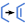 | + Bond Order When selected, the order of the bonds that you pick is incremented by one for each pick, to a maximum of 3. |
| 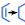 | - Bond Order When selected, the order of the bonds that you pick is decremented by one for each pick, to a minimum of 0. Zero-order bonds are displayed with dashed lines (or tube segments). |
| + Formal Chg When selected, the formal charge of the atoms that you pick is incremented by one for each pick. |
|
| - Formal Chg When selected, the formal charge of the atoms that you pick is decremented by one for each pick. |
|
| 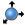 | Move When selected, allows you to move the atom that you pick in the xy plane or the z direction. To move in the xy plane, click the new location. Moves in the z direction are made in 0.5 Å increments when you click on the desired atom. |
| R/S When selected, allows you to invert the chirality or swap the substituents on an aliphatic ring atom by clicking on the atom. |
|
| Clean up Cleans up the geometry of the structure or the selected atoms in the Workspace. Uses the OPLS_2005 force field by default; the universal force field (UFF) can be selected with a preference. See Geometry Cleanup for more information. |
|
| Sculpt (Tools → Structure
Sculpting) Perform "sculpting"—move the selected atoms and run a limited force-field minimization of a region around the moved atoms. The minimization is restarted each time you move an atom. See the Local Transformations topic for more information. |
The Fragments toolbar provides a limited selection of structural fragments. These fragments can be added to the Workspace in Place mode. The intention is that you build with these fragments to create the basic molecular framework, then change the element to introduce heteroatoms. A few specialized fragments with heteroatoms are provided, such as a planar amine fragment, which is useful for building amides. The fragment names are displayed in tooltips. For a more complete set of fragments, open the Build panel at the Fragments tab, which you can do by choosing Edit → Build → Fragments.
The ring fragments can be attached in two ways: connection or fusion. When you click a ring button, the picking cursor is labeled A|B, to indicate that you can pick either an atom or a bond. If you pick an atom, the ring fragment is connected by replacing that atom with the ring ("connection"). If you pick a bond, the ring fragment is connected by replacing that bond with a bond in the ring ("fusion").
|